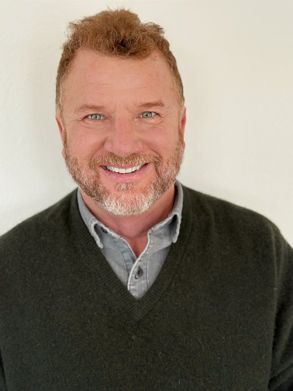
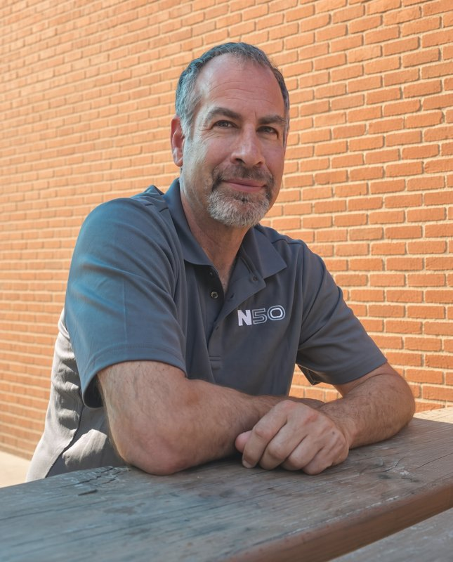
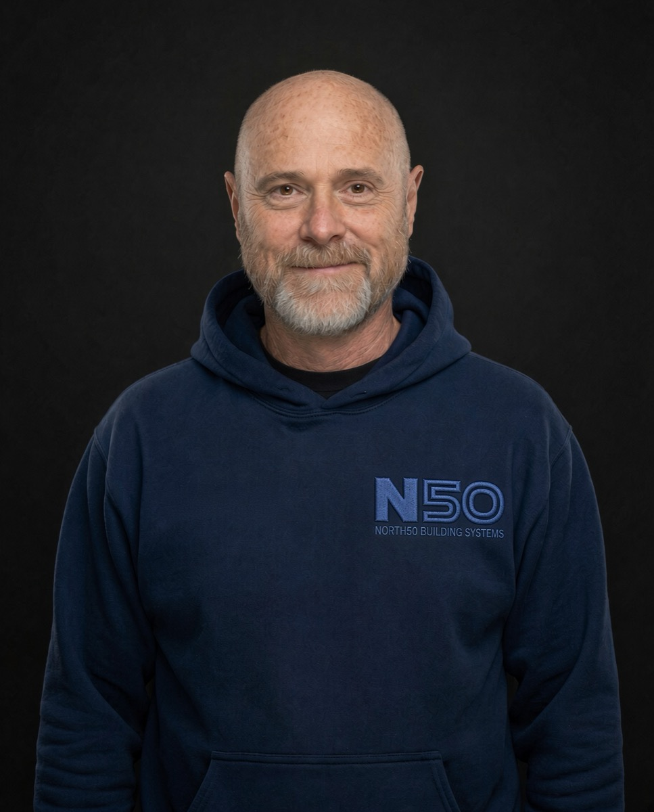

Photo by Kaitlin Wilson
Photo by Kaitlin WilsonWe do not seek what can survive north of the 50th parallel.We seekwhat thrives.
Who we are and what we do.
North 50 Building Systems is a Fairbanks, Alaska company that tests where it counts: in real Interior Alaska winters. Our name comes from the 50th parallel. Our goal is simple. We are not looking for products that merely survive up here. We are looking for the ones that thrive.
What works here,
works anywhere.
To identify, test, certify, and commercialize high-performance glazing & building systems that reliably perform in Alaska’s real-world environment and to turn technical credibility into scalable, trusted solutions for the construction industry.
Engineer. Qualify. Manufacture. Commercialize. We measure first, state the limits honestly, and do not promise what we cannot prove.
Windows have always been the weak spot in a building. They let in our feeble winter sun, and they let out a lot of expensive heat. New technology, like vacuum insulated glass, is changing that. But lab numbers alone do not tell you how a window behaves at forty below, with real wind and months of freezing and thawing.
So we test it for real:
- Real-world testing.Window systems and components go into instrumented test walls outdoors at our lab at 301 Henderson in Ester, just outside Fairbanks, through a full winter, roughly October to March.
- Measuring, not guessing.Sensors record glass and air temperatures around the clock, and we compare what happens in the wall with what the lab sheets predict.
- Looking at the whole system.Glass, frame, edge seal, and installation all work together. A great piece of glass in a cold frame is still a cold window.
Glass has always been the weakest link.
The element that admits a feeble winter sun while exacting a heavy toll in heat loss.
- No longer.
- Vacuum stops convection.
- It stops conduction.
- It even stops the transmission of sound.

The best part
is no part.
The best part of a vacuum window is the nothing between two panes of tempered glass.
Adding layers or complexity does not improve performance. Vacuum refuses to move heat. Atmospheric pressure, however, hates vacuum.
R-value measures how well something resists heat flow. Higher is better. Typical center-of-glass values:
- Single pane: about R-1
- Double pane: about R-2 (R-3 to R-5 with gas fill and low-e)
- Triple pane: about R-7 (varies by product; R-5 to R-8 is common)
- Vacuum glass: about R-12 to R-20 depending on coating, with R-18 common
- Vacuum glass combined with an extra pane (a “hybrid” unit): up to about R-23
These are center-of-glass numbers. A whole window, including frame and edges, rates lower, which is why the frame matters so much.
A vacuum unit can also be thin, often under half an inch for the vacuum part alone, so it can sometimes replace glass in existing frames.

Four things do the work.
“VIG (Vacuum Insulated Glass) does not represent an incremental improvement in glazing technology… We are not talking about a better window. We are talking about a different physics. Vacuum insulation approaches a near-theoretical limit on thermal resistance… The technology is not a stepping stone. It is a destination.” — KCT
A vacuum glass unit is two panes of tempered glass with a tiny gap between them, about 0.3 mm, thinner than three sheets of paper. The air in that gap is pumped out to make a near-perfect vacuum.
- The vacuum.Heat moves three ways: conduction, convection and radiation. With no air in the gap, conduction and convection through it nearly stop.
- The coating.A thin, invisible low-e coating on the glass reflects radiant heat. That cuts the third path.
- The pillars.Air presses on everything at about 14.7 pounds per square inch. On a 14 by 20 inch sample, that is about 4,116 pounds pushing the panes together. Tiny pillars in a grid hold them apart. You have to look closely to see them.
- The edge seal.The edges are sealed airtight so the vacuum lasts for years. Holding a vacuum under that load is hard. It is a big part of why this took so long to get right.
Without the pillars, the panes would touch and you would have roughly R-2. With them, that showroom unit rates about R-18.

Lower heating bills. Windows are often the biggest heat leak in a home. You pay for insulation once; you save every month.
More comfort. Old cold glass pulls heat from your body even when the room air is warm. Warmer glass means you can sit by the window in January.
Less frost and condensation on the inside of the glass.
Quieter rooms. The vacuum also blocks a good deal of outside noise.
The proof is live.
We are testing Vacuum Insulated Glass Integrations in Alaska’s proving ground. Two walls sit in a Fairbanks lab, wired with sensors. This is the outside air and the inside glass, updated every 15 minutes.
You do not have to take our word for it. Our live lab page shows real-time glass temperatures from our L, V, and C Series test windows next to the outside air temperature at the Fairbanks airport, plus live cameras on the test wall.
Live cameras
Streaming during lab hours, Alaska time. Outside those hours the players show offline.
The last 24 hours
The big number is the inside center of each pane, averaged. Each pane also shows its outside center and inside edge. Readings arrive every 15 minutes from the loggers at the lab.
Full lab dashboard →Hold: live cameras stay off until Kevin and Dan agree

L Series wall from inside, thermal camera, 17 Oct. The glass holds its heat across all six panes; the frame runs cooler · Thermal image by Kevin Tennant

The same kind of wall from outside, with the sky and trees in the glass · Photo by Kaitlin Wilson
N50 Qualified
When a defined window system meets North 50’s documented requirements for its intended use, it can earn the North 50 Qualified mark. Each qualification comes with a record stating exactly what was tested, how, the results, and the limits.
The rules are the same for everyone. No product, technology, or manufacturer gets special treatment, including technology developed by North 50 itself. Fees pay for the work; qualification is earned only by meeting the requirements.
- Thermocouple testingThermocouples (temperature sensors) are attached to the glass at the center and at the edge. The window system goes into an outdoor test wall and stays through a full Fairbanks winter. We compare what the glass does with what the lab sheet predicts.
Hold: pass mark to be set with Kevin - Test twoTo be written with Kevin.
- Test threeTo be written with Kevin.
Three kinds of people. One honest answer.
- Homeowners and the public.Clear, honest information about which windows hold up in the cold, so you can buy once and stop paying for heat that leaks out.
- Builders, architects, and engineers.A documented, traceable basis for choosing and specifying window systems for cold-climate projects.
- Manufacturers.Real-world cold testing and a qualification record they can share with the market.


What works here,works anywhere.
Why Fairbanks? Keeping heat on one side of a window isn’t exclusively an issue for Arctic climes.
From our lab at 301 Henderson in Ester, just outside Fairbanks, we see it firsthand: Interior Alaska has some of the toughest conditions for windows in the country, with winter lows that can reach 60 below. Freezing is the step most accelerated weathering tests leave out, and Fairbanks supplies it for free every winter.
Keeping heat on the right side of the glass is not only an Arctic problem.
The same physics that keeps heat in during a Fairbanks January keeps it out during a Texas July.
If a window performs here, it can be trusted almost anywhere.
Insulation keeps heat in or out, lowering the cost of holding the temperature inside the building.
Whether you are heating or cooling, high performance insulation is purchased once, while utility bills come due monthly. Buy once, cry once.


The L Series test wall from inside the lab, through a thermal camera · Thermal image by Kevin Tennant

The lab from outside, with sensor wires on the glass
How heat really
moves.
Not theory. Not lab conditions. Actual performance in minus forty and below, with real wind and real thermal cycling.
Kevin on the physics of windows. Not here to sell you anything, just to explain how it works.
- The Cold Envelope Podcast · Listen now
- The Impossible Vacuum Next · Coming

Dan Keck
Founder & Principal
Dan Keck is a visionary entrepreneur who builds businesses from the ground up, crafting scalable frameworks that maintain organizational integrity through rapid growth phases. Dan consistently challenges conventional thinking to unlock high-efficiency, high-impact solutions.
As the founder and driving force behind North Star Grand Lodge, he is implementing architectural innovation and operational best practices to redefine luxury hospitality in remote environments. His steadfast leadership and commitment to rigorous execution ensure every facet of the development maintains alignment with the project’s core vision.
When he isn’t refining NSGL strategic trajectory, he can be found exploring Alaska’s vast wilderness, seeking inspiration in natural landscapes and resilient ecosystems. His passion for sustainable development and community revitalization underpins North Star Grand Lodge’s mission to create economic opportunities in the Fairbanks region.

Jason Scharfstein
Vice-President
Jason is an accomplished material behaviors engineer specializing in environmentally predictive and characterized systems and their materials. Known for solving complex manufacturing challenges and predicting material behavior, he has developed industry-accepted rigging and installation methods. Jason leads glass house prototype construction and all glazing efforts; he balances his passion for yachting with his NASCAR Crew Chief roots.

Kevin Tennant
Vice-President
Kevin Tennant is a retired U.S. Air Force Senior Master Sergeant and the founder and president of GDI Inc., which operates Glass Doctor of Fairbanks, Glass Doctor of the Mat‑Su Valley, Mat‑Su Insulated Glass, and Thermalite Glass Manufacturing.
In January 1998, while still serving full-time in the Guard, Kevin and Tamera started a windshield-repair business at their kitchen table with a $500 rock-chip kit and discarded windshields. It grew into residential and commercial glass and heavy-equipment work for customers that included Fort Knox, the Alaska Railroad, and Eielson Air Force Base.
In 2019 the U.S. Small Business Administration’s Alaska District Office named Glass Doctor of Fairbanks the Alaska Veteran-Owned Business of the Year. In 2021 its franchisor named it Franchisee of the Year.
When asked if he wanted to “Make a Difference,” his answer was yes.
Kevin continues to focus on high-performance glazing suited to Alaska’s extreme climate, including vacuum-insulated glass work connected to local projects.
Short answers.
- What are the little dots in the glass?Those are the micro-pillars that keep the panes from touching.
- Is it fragile?Vacuum units use tempered glass, which is up to 10X stronger than ordinary glass.
- Why do I sometimes see frost on the outside?On cold, damp mornings, very well-insulated glass can frost on the outside because so little heat escapes to warm it. That is a sign of performance, not a defect.
- Does it work in summer too?Yes. The same physics keeps heat out on hot days.
In the Arctic, heat is not just comfort.At fifty below, it can be the difference between life and death.